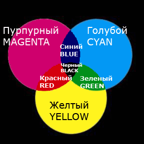
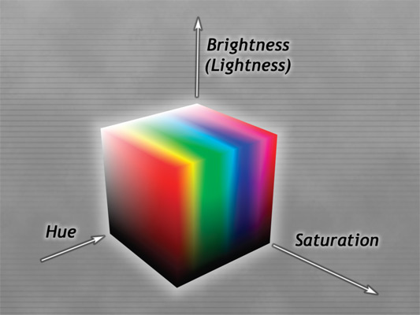

RGB 
CMYK 
HBS
Цветовые модели
Цветовые модели нужны для математического описания спектра цветов доступного человеческому глазу на экране монитора, сканирующих и печатающих устройств. Цвета представляются моделью как результат смешения нескольких составляющих - базовых цветов. Каждый базовый цвет имеет свой диапазон интенсивности. При сложении всех базовых цветов с различной интенсивностью образуются цвета, доступные для данной модели. Цветовые диапазоны моделей могут различаться. Ни одна из существующих моделей не может представить все цвета доступные глазу, каждая из них лишь служит определённым целям.
Также различают аддитивные и субтрактивные модели. В аддитивных моделях при сложении базовых цветов получается более светлый цвет, в субтрактивных – более тёмный. Это значит, что в аддитивной модели нулевое значение интенсивностей всех базовых цветов определяет чёрный цвет, в субтрактивной – белый. Наоборот, в аддитивной модели максимальное значение интенсивностей всех базовых цветов определяет белый цвет, а в субтрактивной – чёрный.
Далее описаны цветовые модели, наиболее часто используемые в компьютерной графике.
Цветовая Модель RGB
В модели RGB цвета описываются с помощью сложения трёх цветовых пучков - красного (Red), зелёного (Green), и синего (Blue). Их также называют цветовыми каналами модели RGB. При их попарном сложении получаются жёлтый (Yellow), голубой (Cyan), и светло-пурпурный (Magenta) цвета. При сложении всех трёх получается белый (White) цвет:Каждый из базовых цветов может принимать интенсивность в диапазоне от 0 до 255. Полное количество цветов, представляемых этой моделью равно 256*256*256 = 16 777 216. Чёрный цвет получается, если интенсивность всех базовых цветов равна нулю. Белый цвет получается при их максимальной интенсивности (255), то есть, RGB - аддитивная модель.
Можно представить модель RGB как 3 прожектора (красный, зелёный и синий), которые светят на экран. Регулируя яркость таких прожекторов можно получить желаемый цвет на экране. Именно на таком принципе работают современные проекторы.
Модель RGB хороша для описания цветов, отображаемых мониторами и сканерами, ведь именно в них цвет получается путём смешения световых пучков. Она также используется для описания цветов на страницах Интернет в специальном шестнадцатеричном виде (#RRGGBB).
Цветовая Модель CMYK
В модели CMYK, в отличие от RGB, цвета смешиваются как краски: при отсутствии красок виден белый лист, после смешения всех красок максимальной интенсивности получается чёрный цвет. Стало быть, CMYK - субтрактивная модель. Базовые цвета CMY являются дополняющими к базовым цветам RGB, поэтому первые три базовых цвета модели CMYK можно получить путём вычитания из белого цветов RGB.
Цвета в CMYK не такие чистые, как в RGB. Базовые цвета модели CMYK - голубой (Cyan), светло-пурпурный (Magenta) и жёлтый (Yellow). При их попарном смешивании получаются фиолетовато-синий (Blue), оранжево-красный (Red) и синевато-зелёный (Green) цвета. При смешивании этих трёх базовых цветов получается грязно-серый цвет, а не чёрный (как если смешать такие же цветные краски на листе, получится грязь). Поэтому помимо трёх базовых цветов в этой модели есть также чёрный (Black) цвет. Это значит, что в CMYK используется 4 цветовых канала. Каждый из четырёх цветов может принимать значения от 0% до 100%.
Несмотря на то, что в CMYK способна принимать 100*100*100*100 = 100 млн. значений, её цветовой диапазон меньше, чем у RGB (16 млн.) из-за перекрытия областей чёрной и цветной составляющей. Можно сказать, что в диапазон CMYK входят все тусклые цвета из RGB, а яркие - не все (особенно мало ярких синих, а также красных). Поэтому, если Вы работаете в CMYK, то некоторые цвета модели RGB не будут работать. Чтобы цвета моделей лучше соответствовали друг другу, требуется настроить так называемые цветовые профили (ICC profiles) для ваших устройств - монитора, принтера, сканера и тому прочих.
Модель CMYK следует использовать, если изображение предназначено для печати, именно таким образом цвета описываются в печатающих устройствах. Более того, если Вы делаете изображение в RGB, при печати оно всё равно преобразуется в CMYK. При этом могут возникнуть значительные цветовые искажения. Если же Вы не собираетесь печатать свои творения (или не уверены), то Вам всё же рекомендуется работать с изображением в модели RGB.
Цветовая Модель HSB
Модель HSB основывается не на базовых цветах, а на более естественных для восприятия понятиях: оттенок (Hue), насыщенность (Saturation) и яркость (Brightness) - всего 3 канала (яркость иногда называют не Brightness, а Lightness, тогда название модели не HSB, а HSL).
Снижение насыщенности аналогично добавлению белой краски на палитру, так же как снижение яркости - добавлению чёрной. Оттенок может принимать значения от 0° до 360°, а насыщенность и яркость - от 0% до 100%:
Модель HSB интуитивно лучше понятна, чем RGB или CMYK. Работая в ней легче найти нужный цвет. Графические файлы в изучаемых в учебнике программах не создаются в цветовом режиме HSB, он служит лишь для удобства. Все цвета из этой модели автоматически переводятся в рабочую модель (обычно RGB или CMYK). При этом количество цветов, доступных модели HSB определяется количеством цветов рабочей модели (за счёт того, что значения насыщенности и яркости могут быть выражены в долях процентов, а не только целыми значениями процентов).
Чёрно-белый режим (Grayscale)
Режим Grayscale - чёрно-белый, в нём есть информация только об уровне чёрного цвета. Ноль соответствует белому цвету, 255 - чёрному, остальное - градации серого:
Единственный канал Grayscale соответствует чёрно-белому изображению. Помимо чёрно-белых изображений Grayscale также используется при создании различных эффектов, масок прозрачности, альфа каналов и при работе с выделением. Также, любой цветовой канал может быть представлен, как чёрно-белый.
Данный сайт создан как учебное пособие по теме "Компьютерная рафика"
Автор гр.114 Василенко В. А.